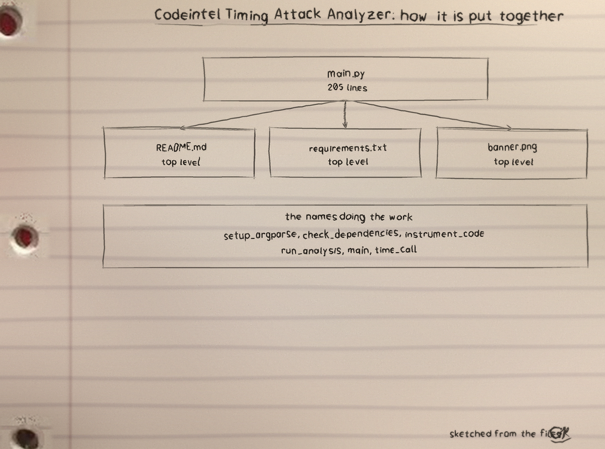
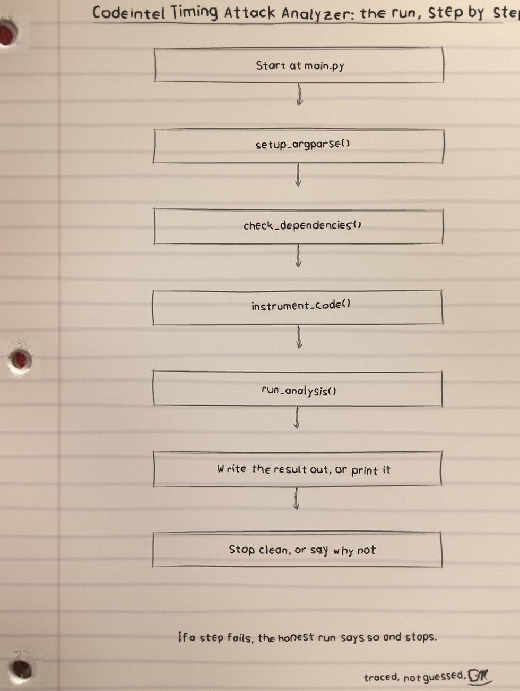
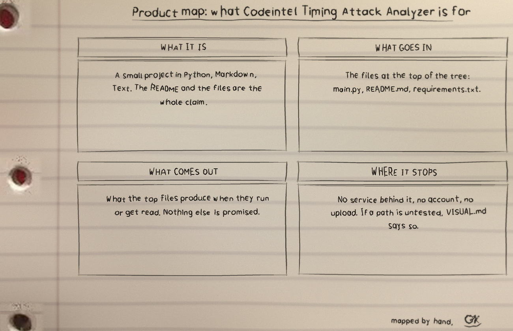

What the analyzer does
The tool rewrites a target Python file with timing instrumentation and runs the copy again and again, run as python3 main.py TARGET_FILE [--iterations N] [--threshold T] [--output FILE] [--dependency_check]. Every function in the target is wrapped so a start stamp is taken on entry and the elapsed time is printed from a finally block. Whatever the copy prints collects in the output file, whose default is timing_analysis.log. The default count is 100 runs.
What it never does
The tool never computes a verdict. The threshold is validated to lie from 0 to 1 and then never applied to anything: no timing is compared against it, no correlation with secret data exists anywhere in the code, and no vulnerability is identified. The GitHub description claim to identify timing attack vulnerabilities overstates a stopwatch.
How a run proceeds
The instrumented copy is written beside the original under a name built from it, overwriting any file already there. Nested functions are double-counted: a nested call is timed once for itself and again inside its outer function's elapsed time. The copy runs with no arguments and no input.
A target that expects command line arguments fails every iteration. Any iteration whose run exits non-zero makes the whole analysis exit 1, and those runs are counted as failed runs, not as timing data.
The dependency check
The dependency check probes for bandit, flake8, pylint, and pyre-check and exits 1 when one is missing, though the timing run never invokes any of them.
Parameters
target_file: the Python file to analyse. Required and positional.--iterations: how many times the instrumented copy runs (default 100).--threshold: validated from 0 to 1 (default 0.05), then never applied.--output: output file (default timing_analysis.log).--dependency_check: probe for the four tools named above.
The README parameter list omits target_file and leaves the four options undescribed, though the code help text describes them. That record stands as printed.
Exit codes
The number of failed iterations is logged on every run. If any iteration exits non-zero, the analysis exits 1. A target that runs cleanly on every iteration completes at exit 0 with its timings in the output file.
Record notes
The README clone line uses the unhyphenated ShadowGuardAI and its usage line is a placeholder; the closing licence line reads Copyright (c) ShadowGuardAI while the LICENSE file is MIT. Those lines stand as printed and are not reconciled silently.
Diagrams



Licence
The repository LICENSE file carries the MIT License.